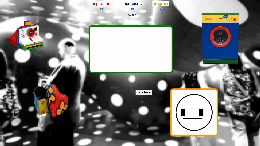
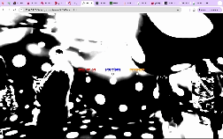

My initial idea for week 4 was to build around this image I took during my first time visiting Yayoi. I really liked how the wide lens and overexposure gives this photo an otherwordly yet nostalgic quality. However, the picture itself is not quite in alignment with the aesthetic that I developed on my homepage so I decided to explore different colour treatments and filters in hope of achieving a more unified aesthetic.
i. after effects: black and white filter, flicker film loop, low-res patchwork filterii. after effects: like above + green overlay

iii. implementing image 1 as background and constructing page elements around creating a vibe?

iv. experimenting with a higher contrast
Firstly, apologies for the blurry gifs. The gif generator that I used somehow only offered either 1000kB, 5MB or 40MB and so sacrifices had to be made for optimisation sake. Secondly, after several rounds of experimentation, I realised that the image — being quite visually busy — doesn’t integrate well with other visual assets. My initial plan was to explore its liminal quality by pairing it with vibrant, primary-coloured objects to create contrast, but the results felt more cluttered than cohesive. Ultimately, removing the background and only keeping the assets makes the page much more easy to look at while still communicating the aesthetic that I was going for.
.gif)